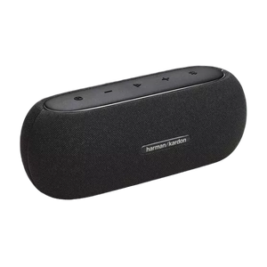
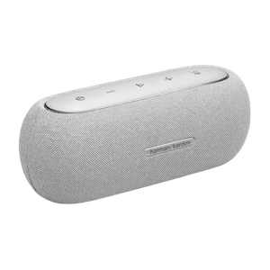

Speakers
Harman Kardon Luna
The Harman Kardon Luna speakers are a fusion of elegant design and powerful audio performance. These wireless speakers boast Bluetooth connectivity, delivering a seamless listening experience with a touch of sophistication. Ideal for users who appreciate premium aesthetics and uncompromised sound quality.
Color